EL GRAN DESPERTAR
Grecia, del siglo VII al V a.C.
Fue en los grandes oasis, en los que el sol quema con crueldad y sólo la tierra regada por los ríos produce frutos comestibles, donde fueron creados, bajo el dominio de déspotas orientales, los primeros estilos artísticos, que permanecieron casi invariables durante milenios. Las condiciones de existencia eran muy diferentes de las de los climas más templados de la zona marítima que bordeaba esos imperios, de las correspondientes a las muchas islas, grandes y pequeñas, del Mediterráneo oriental y las recortadas costas de las penínsulas de Grecia y de Asia Menor. Estas regiones no se hallaban sujetas a un gobernante. Eran escondrijos de osados marineros, de jefes piratas que erraban por doquier y que amontonaban grandes tesoros en sus fortalezas y poblados costeros, como fruto del comercio y las incursiones marítimas. El principal centro de esos dominios fue, en los orígenes, la isla de Creta, cuyos reyes eran entonces tan ricos y poderosos como para enviar embajadores a Egipto, y cuyo arte causó impresión incluso en este país.
No se sabe con exactitud cuál era el pueblo que gobernaba en Creta, cuyo arte fue copiado en la Grecia continental, particularmente en Micenas. Sólo sabemos que, alrededor de un milenio a.C., tribus belicosas de Europa penetraron en la abrupta península griega y en las costas de Asia Menor, combatiendo y derrotando a sus primitivos habitantes. Únicamente en los cantos que hablan de esas batallas sobrevive algo del esplendor y belleza del arte que fue destruido por aquel prolongado combatir, pues esos cantos son los poemas homéricos y los recién llegados eran las tribus griegas.
Durante los primeros siglos de su dominación en Grecia, el arte de esas tribus era bastante rígido y primitivo. No hay nada en esas obras del alegre estilo cretense; hasta parecen sobrepasar a los egipcios en cuanto a rigidez. Su cerámica estaba decorada con sencillos esquemas geométricos, y allí donde tuviera que ser representada una escena, era integrada en este dibujo estricto. La ilustración 46, por ejemplo, reproduce la lamentación por la muerte de un hombre. Éste yace en su ataúd, mientras las figuras a ambos lados levantan las manos hasta sus cabezas, en el lamento ritual acostumbrado en casi todas las sociedades primitivas.
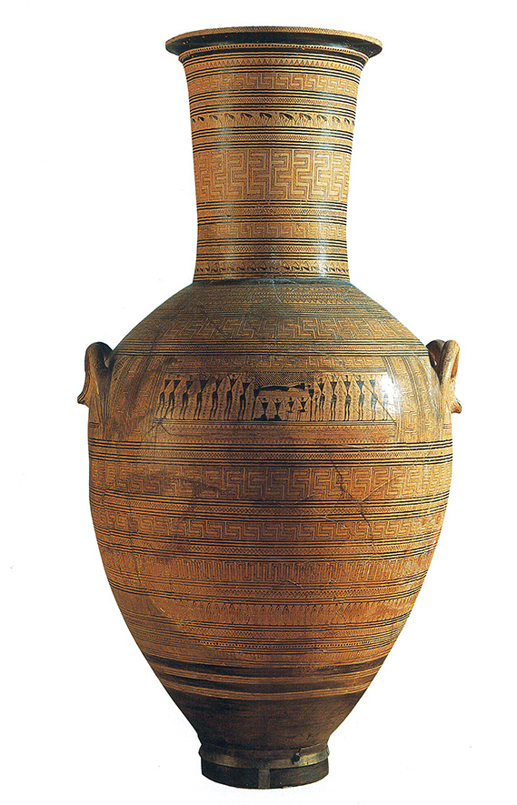
46 Duelo por un muerto, h. 700 a.C. Vaso griego de estilo geométrico, 115 cm de altura; Museo Arqueológico Nacional, Atenas.
Algo de este amor a la sencillez y a la distribución clara parece haber pasado al estilo arquitectónico que los griegos introducen en aquellos lejanos tiempos y que, sorprende al decirlo, pervive todavía en nuestras villas y ciudades. La ilustración 50 muestra un templo griego del antiguo estilo, inscrito dentro del correspondiente a la tribu dórica. A ésta pertenecieron los espartanos, conocidos por su austeridad. No existe, realmente, nada innecesario en esos edificios, nada, al menos, cuya finalidad no podamos, o no creamos, ver. Probablemente los más antiguos de esos templos fueron construidos de madera, y consistieron en poco más que un cubículo cercado en el que albergar la imagen del dios, y, en torno a él, fuertes puntales para sostener el peso del tejado. Hacia 600 a.C. los griegos empiezan a imitar en piedra esas sencillas estructuras. Los puntales de madera se convirtieron en columnas que sostenían fuertes travesaños de piedra. Esos travesaños recibían el nombre de arquitrabes, y el conjunto que descansaba sobre las columnas, el de entablamento. Aún podemos observar las huellas de los antiguos puntales en la parte superior, en la que parece mostrarse la terminación de las vigas. Estas terminaciones eran señaladas con tres hendiduras, por lo que los griegos las denominaron triglifos, que significa tres cortes. El espacio entre unos y otros se llamaba metopa. Lo sorprendente en esos templos primitivos, que imitan manifiestamente las construcciones de madera, es la simplicidad y armonía del conjunto. Si quienes los construyeron hubieran utilizado simples pilares cuadrados, o columnas cilíndricas, el edificio hubiera podido parecer pesado y tosco. En vez de ello, procuraron conformar las columnas de modo que tuvieran un ligero abultamiento hacia su mitad, yendo en disminución hacia los extremos. El resultado es que parecen flexibles, como si el peso de la techumbre las comprimiera ligeramente sin deformarlas. Casi parece como si fueran seres vivos llevando su carga con facilidad. Aunque algunos de esos templos son grandes e imponentes, no se trata de construcciones colosales como las egipcias. Se siente ante ellas que fueron construidas por y para seres humanos. En efecto, no pesaba sobre los griegos una ley divina que esclavizara o pudiera esclavizar a todo un pueblo. Las tribus griegas se asentaron en varias pequeñas ciudades y poblaciones costeras. Existieron muchas rivalidades y fricciones entre esas pequeñas comunidades, pero ninguna llegó a señorear sobre las restantes.
De estas ciudades-estado griegas, Atenas, en Ática, llegó a ser la más famosa y la más importante, con mucho, en la historia del arte. Fue en ella, sobre todo, donde se produjo la mayor y más sorprendente revolución en toda la historia del arte. Es difícil decir cuándo comenzó esta revolución; acaso aproximadamente al mismo tiempo que se construyeron los primeros templos de piedra en Grecia, en el siglo VI a.C. Sabemos que antes de esta época, los artistas de los antiguos imperios orientales se esforzaron en mantener un género peculiar de perfección. Trataron de emular el arte de sus antepasados tan fielmente como les fuera posible, adhiriéndose estrictamente a las normas consagradas que habían aprendido. Cuando los artistas griegos comenzaron a esculpir en piedra, partieron del punto en que se habían detenido egipcios y asirios. La ilustración 47 demuestra que habían estudiado e imitado los modelos egipcios, y que aprendieron de ellos a modelar las figuras erguidas de los jóvenes, así como a señalar las divisiones del cuerpo y de los músculos que las sujetan entre sí. Pero también prueba que el artista que hizo estas estatuas no se hallaba contento con obedecer una fórmula por buena que fuera, y que empezaba a realizar experiencias por sí mismo. Evidentemente, se hallaba interesado en descubrir el aspecto real de las rodillas. Acaso no lo consiguió por entero; tal vez las rodillas de esas estatuas sean hasta menos convincentes que en las egipcias, pero lo cierto es que decidió tener una visión propia en lugar de seguir las prescripciones antiguas. No se trató ya de una cuestión de formas practicables para representar el cuerpo humano. Cada escultor griego quería saber cómo tenía él que representar un cuerpo determinado. Los egipcios basaron su arte en el conocimiento. Los griegos comenzaron a servirse de sus ojos. Una vez iniciada esta revolución, ya no se detuvo. Los escultores obtuvieron en sus talleres nuevas ideas y nuevos modos de representar la figura humana, y cada innovación fue ávidamente recibida por otros que añadieron a ella sus propios descubrimientos. Uno descubría el modo de esculpir el torso; otro hallaba que una estatua podía parecer mucho más viva si los pies no estaban afirmados excesivamente sobre el suelo; y un tercero descubría que podía dotar de vida a un rostro combando simplemente la boca hacia arriba de modo que pareciera sonreír. Claro está que el método egipcio era en muchos aspectos más seguro. Las experiencias de los artistas griegos se frustraron en muchas ocasiones. La sonrisa pudo parecer una mueca enojosa, o la posición menos rígida dar la impresión de afectada. Pero los artistas griegos no se asustaron fácilmente ante estas dificultades. Habían echado a andar por un camino en el que no había retroceso posible.
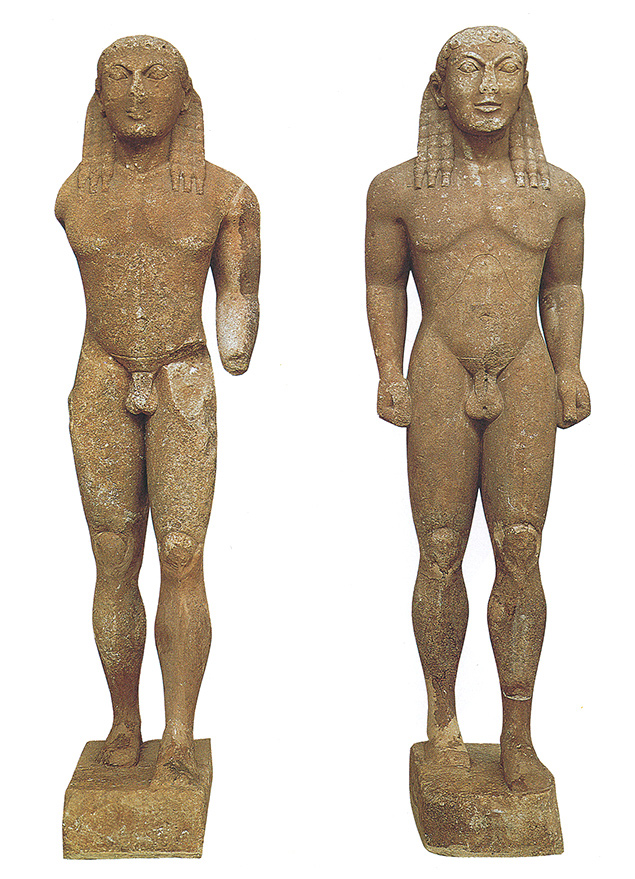
47 Polimedes de Argos, Los hermanos Cleobis y Biton, h. 615-590 a.C. Mármol, 218 y 216 cm de altura; Museo Arqueológico, Delfos.
A continuación siguieron los pintores. No sabemos de sus obras más que lo que nos dicen los escritores griegos, pero es importante advertir que muchos pintores fueron incluso más importantes en su tiempo que los escultores. El único medio de que podamos formarnos una vaga idea de cómo era la pintura griega, es observar la decoración de sus cerámicas. Estos recipientes pintados se llamaban generalmente jarrones, vasos o floreros, aunque lo más frecuente es que se destinasen no a colocar flores en ellos, sino a guardar vino o aceite. La pintura de esas vasijas se convirtió en una industria importante en Atenas, y el humilde artesano empleado en esos obradores se hallaba tan ávido como los otros artistas de introducir los más recientes descubrimientos artísticos en sus productos. En los vasos primitivos, pintados en el siglo VI a.C., encontramos aún huellas de los métodos egipcios (ilustración 48). En uno aparecen los héroes Aquiles y Ayax, según Homero, jugando a los dados en su tienda. Ambas figuras están todavía representadas de perfil y con los ojos como vistos de frente; pero sus cuerpos ya no están dibujados al modo egipcio, con los brazos y las manos en colocación tan precisa y rígida. Evidentemente, el pintor ha tratado de imaginar cómo aparecerían realmente dos personas que estuvieran una frente a la otra en aquella actitud. No le preocupó mostrar solamente una pequeña parte de la mano izquierda de Aquiles, quedando oculto el resto detrás del hombro. Abandonó la creencia de que todo lo que él sabía que pertenecía a la realidad debía ser mostrado. Una vez quebrantada esta antigua norma, y cuando el artista empezó a confiar en lo que veía, tuvo lugar un verdadero derrumbamiento. Los pintores realizaron el mayor descubrimiento de todos: el escorzo. Fue un momento tremendo en la historia del arte aquel en que, tal vez un poco antes de 500 a.C., los artistas se aventuraron por vez primera en toda la historia a pintar un pie visto de frente. En los millares de obras egipcias y asirias que han llegado hasta nosotros nunca ocurrió nada semejante.
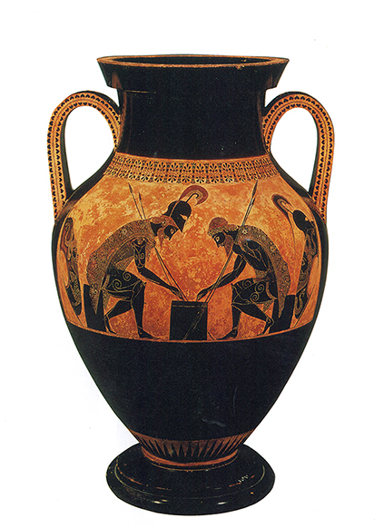
48 Aquiles y Ayax jugando a los dados, h. 540 a.C. Vaso en el estilo de las «figuras negras», firmado por Exekias, 61 cm de altura; Museo Etrusco, Vaticano.
49 Guerrero ciñendo la armadura, h. 510-500 a.C. Vaso en el estilo de las «figuras rojas», firmado por Entímedes, 60 cm de altura; Antigua Colección Nacional y Gliptoteca, Munich.
Un vaso griego (ilustración 49) muestra con cuánto orgullo fue acogido este descubrimiento. Vemos en él a un guerrero ajustándose su armadura para el combate; sus padres, que, uno a cada lado, le ayudan y probablemente le dan buenos consejos, aún están representados según rígido perfil. En el centro, la cabeza del joven también aparece de perfil, y observamos que el pintor no encontró demasiado fácil encajar esta cabeza en el cuerpo, que está visto de frente. El pie derecho, asimismo, está dibujado de la manera «segura», pero el izquierdo aparece escorzado: podemos ver sus cinco dedos como una hilera de cinco pequeños círculos. Puede parecer exagerado detenerse en tan pequeño detalle, pero es que éste significó nada menos que el arte antiguo estaba muerto y enterrado. Significa que el artista no se propuso ya incluirlo todo, dentro de la pintura, en su aspecto más claramente visible, sino que tuvo en cuenta el ángulo desde el cual veía el objeto. E inmediatamente, junto al pie, mostró el significado de la escena. Dibujó el escudo del joven guerrero, no en la forma en que podemos representárnoslo en nuestra imaginación, esto es, circular, sino visto de lado y como apoyándose contra la pared.
Pero al observar esta pintura y la anterior, advertimos que las lecciones del arte egipcio no fueron simplemente descartadas y superadas. Los artistas griegos trataron de siluetear sus figuras tan claramente como les fuese posible, y de incluir en la representación tanta parte de su conocimiento del cuerpo humano como pudieran, sin violentar su apariencia. Continuaban gustándoles los perfiles sólidos y el dibujo equilibrado. Se hallaban lejos de intentar la copia de la naturaleza tal como la veían en una ojeada. La vieja fórmula, el tipo formal de representación humana, tal como se desarrolló en esas centurias, se hallaba aún en su punto de partida. Solamente que ya no lo consideraron sagrado en cada uno de sus pormenores.
La gran revolución del arte griego, el descubrimiento de las formas naturales y del escorzo, tuvo lugar en la época que es, al propio tiempo, el período más extraordinario de la historia del hombre. Época en la que las ciudades griegas empiezan a interrogarse acerca de las tradiciones y leyendas antiguas y a inquirir sin prejuicios la naturaleza de las cosas, y en la que la ciencia tal como la entendemos hoy, y la filosofía, surgen entre los hombres, mientras el teatro empieza a desarrollarse, naciendo de las ceremonias celebradas en honor de Dionisos. No debemos suponer, sin embargo, que en aquellos días los artistas se contaron entre las clases intelectuales de la ciudad. Los griegos acomodados, que regían los negocios de ésta y que empleaban su tiempo en argumentar interminablemente en el ágora, y acaso también los poetas y los filósofos, consideraban en su mayoría a los pintores y escultores como gente inferior. Los artistas trabajaban con sus manos y para vivir. Permanecían en sus fundiciones cubiertos de sudor y de tizne, se afanaban como vulgares braceros y, por consiguiente, no eran considerados miembros cabales de la sociedad griega. Sin embargo, su participación en la vida de la ciudad era infinitamente mayor que la de un artesano egipcio o asirio, porque la mayoría de las ciudades griegas, en particular Atenas, eran democracias en las cuales a esos humildes operarios despreciados por los esnobs ricos les estaba permitido, hasta cierto punto, participar en los asuntos del gobierno.
En la época en que la democracia ateniense alcanzó su más alto nivel fue cuando el arte griego llegó a su máximo desarrollo. Tras rechazar Atenas la invasión de los persas, bajo la dirección de Pericles se empezaron a erigir de nuevo los edificios destruidos por aquéllos. En 480 a.C., los templos situados sobre la roca sagrada de Atenas, la Acrópolis, habían sido incendiados y saqueados por los persas. Ahora serían construidos en mármol con un esplendor y una nobleza desconocidos hasta entonces (ilustración 50). Pericles no era un esnob. Los escritores antiguos dicen que trató a los artistas de la época como a iguales suyos. El hombre a quien confió los planos de los templos fue el arquitecto Ictino, y el escultor que labró las estatuas de los dioses y asesoró en la decoración de los templos fue Fidias.
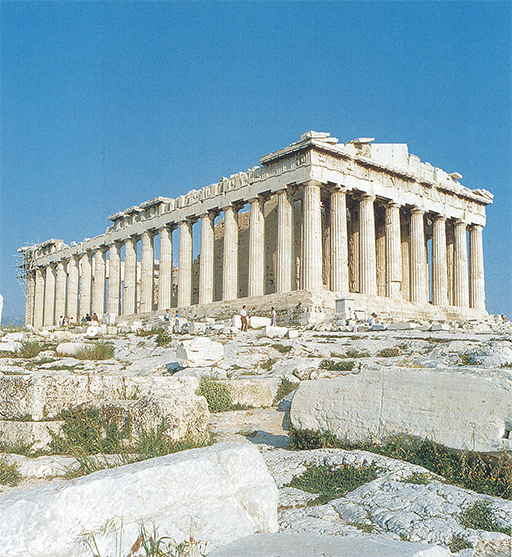
50 Ictino, El Partenón, Acrópolis, Atenas, h. 450 a.C. Templo dórico.
La fama de Fidias se cimentó en obras que ya no existen. Pero importa mucho tratar de imaginarse cómo serían las mismas, pues olvidamos con demasiada facilidad los fines a que servía el arte griego de entonces. Leemos en la Biblia los ataques de los profetas contra la adoración de los ídolos, pero generalmente no asociamos ninguna idea concreta con tales palabras. Existen muchos otros pasajes como el siguiente de Jeremías (10, 3-5):
Porque las costumbres de los gentiles son vanidad: un madero del bosque, obra de manos del maestro que con el hacha lo cortó, con plata y oro lo embellece, con clavos y a martillazos se lo sujeta para que no se menee. Son como espantajos de pepinar, que ni hablan. Tienen que ser transportados, porque no andan. No les tengáis miedo, que no hacen ni bien ni mal.
Jeremías tenía presentes los ídolos de Mesopotamia, hechos de madera y de metales preciosos. Pero sus palabras podrían aplicarse exactamente igual a las obras de Fidias, realizadas tan sólo unos cuantos siglos después de la época en que vivió el profeta. Cuando paseamos a lo largo de las hileras de estatuas en mármol blanco pertenecientes a la antigüedad clásica que guardan los grandes museos, olvidamos con excesiva frecuencia que entre ellas están esos ídolos de los que habla la Biblia: que la gente oraba ante ellos, que les eran llevados sacrificios entre extraños ensalmos, y que miles y decenas de miles de fieles pudieron acercarse a ellos con la esperanza y el temor en sus corazones, pues para esas gentes, tales estatuas e imágenes grabadas del profeta eran, al propio tiempo, dioses. La verdadera razón a que obedece el que casi todas las estatuas famosas del mundo antiguo pereciesen fue que, tras el triunfo de la cristiandad, se consideró deber piadoso romper toda estatua de los dioses odiados. En su mayoría, las esculturas de nuestros museos sólo son copias de segunda mano, hechas en la época romana para coleccionistas y turistas como souvenirs y como adornos para los jardines y baños públicos. Debemos agradecer esas copias, ya que ellas nos dan, al menos, una ligera idea de las más famosas obras maestras del arte griego; pero de no poner en juego nuestra imaginación, esas pálidas imitaciones pueden causar también graves perjuicios. Ellas son responsables, en gran medida, de la generalizada idea de que el arte griego carecía de vida, de que era frío e insípido, y de que sus estatuas poseían aquella apariencia de yeso y vacuidad expresiva que nos recuerdan las trasnochadas academias de dibujo. El único ejemplar, verbigracia, del gran ídolo de Palas Atenea que hizo Fidias para el templo del Partenón (ilustración 51) difícilmente parecerá muy impresionante. Debemos atender a las descripciones antiguas y tratar de representarnos cómo pudo ser: una gigantesca imagen de madera, de unos once metros de altura, como un árbol, totalmente recubierta de materias preciosas: la armadura y las guarniciones, de oro; la piel, de marfil. Estaba también llena de color brillante y vigoroso sobre el escudo y otros lugares de la armadura, sin olvidar los ojos hechos de piedras preciosas resplandecientes. En el dorado yelmo de la diosa sobresalían unos grifos, y los ojos de una gran serpiente enrollada en la cara interior del escudo estaban marcados también, sin duda, por dos brillantes piedras. Debió haber sido una visión atemorizadora y llena de misterio la que se ofrecía al ingresar en el templo y hallarse, de pronto, frente a frente con esa gigantesca estatua. Era, sin duda alguna, casi primitiva y salvaje en algunos de sus aspectos, algo que relacionaba todavía a las imágenes de esta clase con las antiguas supersticiones contra las que había predicado el profeta Jeremías. Pero en aquel tiempo, ya habían dejado de ser lo más importante esas ideas primitivas que hacían de los dioses demonios formidables que habitaban en las estatuas. Palas Atenea, tal como la vio Fidias, y tal como la representó en su estatua, era más que un simple ídolo o demonio. Según todos los testimonios, sabemos que esta escultura tuvo una dignidad que proporcionaba a la gente una idea distinta del carácter y de la significación de sus dioses. La Atenea de Fidias fue como un gran ser humano. Su poder residía, no en su mágica fascinación, sino en su belleza. Advertíase entonces que Fidias había dado al pueblo griego una nueva concepción de la divinidad.
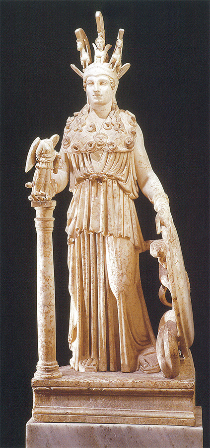
51 Fidias, Atenea Partenos, h. 447-432 a.C. Copia romana en mármol del original en madera, oro y marfil, 104 cm de altura; Museo Arqueológico Nacional, Atenas.
Las dos grandes obras de Fidias, su Palas Atenea y su famosa estatua de Zeus Olímpico, se han perdido definitivamente, pero los templos en los cuales estuvieron instaladas aún existen, y, con ellos, algunas de las decoraciones ejecutadas en tiempo de Fidias. El templo de Olimpia es el más antiguo; acaso se lo comenzó hacia 470 a.C. y se lo concluyó antes de 457 a.C. En los espacios (metopas) que se hallan sobre el arquitrabe están representadas las hazañas de Hércules. La ilustración 52 muestra el episodio de las manzanas de las Hespérides. Fue éste un trabajo que ni él mismo quiso o pudo realizar. Hércules suplicó a Atlas, que es el que sostiene el cielo sobre sus hombros, que lo hiciera por él, y Atlas aceptó a condición de que Hércules sostuviera su carga entre tanto. En este relieve se ve a Atlas regresando con las manzanas de oro para Hércules, quien se halla erguido bajo su enorme carga. Atenea, la astuta colaboradora en todas sus hazañas, le ha puesto un almohadón sobre los hombros para hacérsela más soportable. En su mano derecha tiene de nuevo Atenea una lanza metálica. En su totalidad, el tema está expresado con simplicidad y claridad maravillosas. Percibimos que el artista seguía prefiriendo mostrar una figura en una actitud erguida, de frente o de lado. Atenea está representada de cara al espectador, y solamente su cabeza se inclina hacia Hércules. No es difícil advertir en estas figuras el prolongado influjo de las normas que rigieron el arte egipcio. Pero notamos que la grandiosidad, la serenidad majestuosa y la fuerza de estas estatuas se deben también a esta observancia de las normas antiguas. Éstas habían dejado de constituir una herencia que coartara la libertad del artista. La vieja idea de que importaba mucho mostrar la estructura del cuerpo —como si dijéramos sus goznes principales, para que nos ayudaran a darnos cuenta de la disposición del conjunto— incitó al artista a explotar la anatomía de músculos y huesos, y a labrar una reproducción convincente de la figura humana, visible incluso bajo el velo de los ropajes. En efecto, la manera de emplear los artistas griegos los ropajes para señalar esas principales divisiones del cuerpo revela la importancia que concedieron al conocimiento de la forma. Este equilibrio entre una adhesión a las normas y una libertad dentro de ellas es el que ha llevado a que se admirara tanto el arte griego en los siglos posteriores, y que los artistas se hayan vuelto hacia sus obras maestras en busca de guía e inspiración.
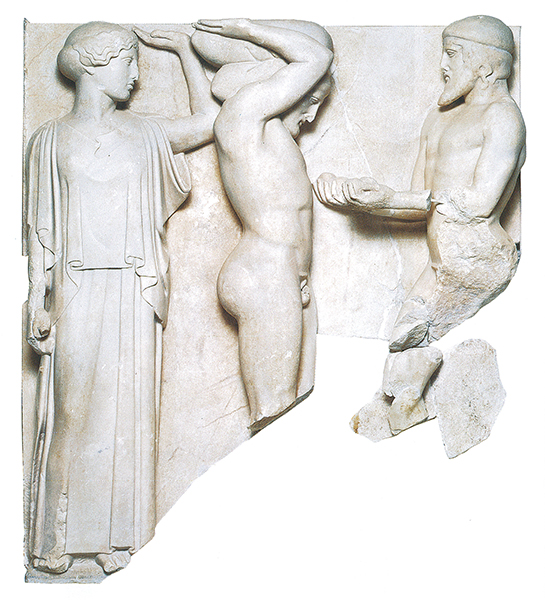
52 Hércules sosteniendo los cielos, h. 470-460 a.C. Metopa en mármol del templo de Zeus en Olimpia, 156 cm de altura; Museo Arqueológico, Olimpia.
El tipo de obras que con frecuencia se encargaba a los artistas griegos pudo contribuir a que éstos perfeccionaran su conocimiento del cuerpo humano en movimiento. Un templo como el de Olimpia se hallaba rodeado de estatuas de atletas victoriosos dedicadas a los dioses. A nosotros puede parecernos ésta una extraña costumbre, pues por populares que lleguen a ser nuestros deportistas, no imaginamos que se tengan que labrar sus efigies para ofrecerlas a una iglesia en agradecimiento por la victoria conseguida en el último torneo. Pero los grandes deportes organizados por los griegos, de los cuales los juegos olímpicos eran, claro está, los más famosos, constituían algo muy diferente de nuestras modernas competiciones. Estaban mucho más ligados a las creencias y los ritos religiosos del pueblo. Los que tomaban parte en ellos no eran deportistas o aficionados, ni profesionales, sino miembros de las principales familias griegas, y el vencedor en esos juegos era mirado con temor, como un hombre al que han favorecido los dioses con el don de la victoria. Para obtener esa virtud era para lo que originariamente se celebraban tales juegos, y para conmemorar, y acaso perpetuar, tales signos de gracia concedida por los dioses, para lo que los vencedores encargaban sus efigies a los artistas más renombrados de la época.
Las excavaciones realizadas en Olimpia han descubierto gran cantidad de pedestales sobre los que se hallaban las estatuas, pero éstas han desaparecido. En su mayoría eran de bronce y probablemente fueron fundidas de nuevo cuando el metal escaseó en el medievo. Sólo en Delfos fue hallada una de esas estatuas, la figura de un auriga (ilustración 53) cuya cabeza se reproduce en la ilustración 54. Difiere sorprendentemente de la idea general que uno puede haberse formado fácilmente del arte griego cuando sólo se han visto reproducciones. Los ojos, que parecen a menudo tan vacuos e inexpresivos en las estatuas de mármol, o que están vacíos en las cabezas de bronce, se hallan marcados por piedras coloreadas, como sucedía siempre en aquella época. Los cabellos, ojos y labios estaban ligeramente sobredorados, enriqueciendo y avivando el conjunto del rostro, sin que una cabeza semejante pareciera nunca chillona o vulgar. Observamos que el artista no trató de imitar una cabeza real con todas sus imperfecciones, sino que la obtuvo de su conocimiento de la forma humana. Ignoramos si la estatua del auriga se parecería a su modelo; probablemente no se pareció en el sentido que nosotros damos a este término, pero constituye una imagen convincente de un ser humano, de simplicidad y belleza maravillosas.
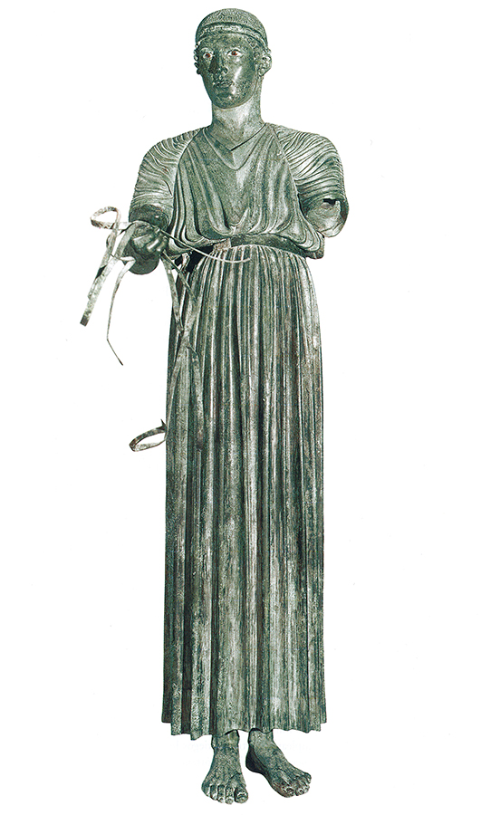
53 Auriga, h. 475 a.C. Hallado en Delfos; bronce, 180 cm de altura; Museo Arqueológico, Delfos.
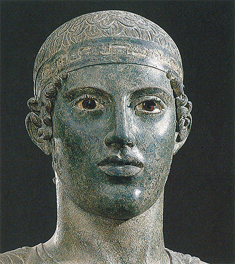
54 Detalle de la ilustración 53.
Obras como ésta, no mencionada siquiera por los escritores clásicos griegos, nos hacen pensar en cuántas de las más famosas de esas estatuas de atletas habremos perdido, tal como la de El discóbolo (Lanzador de disco), del escultor ateniense Mirón, que perteneció probablemente a la misma generación de Fidias. Se han encontrado varias copias de esta estatua que nos permiten, al menos, formarnos una idea general de lo que era (ilustración 55). El joven atleta está representado en el momento en que se dispone a lanzar el pesado disco. Se ha inclinado y balancea el brazo hacia atrás para poder arrojar aquél con la mayor violencia. En el instante siguiente dará un paso hacia adelante y lo dejará ir, impulsando el lanzamiento con un giro del cuerpo. La actitud parece tan natural que los deportistas modernos la han tomado como modelo y han tratado de aprender de ella el estilo griego de lanzar el disco con exactitud. Pero esto resultó ser menos fácil de lo que esperaban. Olvidaron que la estatua de Mirón no es un fotograma de un documental deportivo, sino una obra de arte griego. En efecto, si la observamos con mayor cuidado encontraremos que Mirón ha conseguido su sorprendente sensación de movimiento por medio, principalmente, de una nueva adaptación de métodos artísticos muy antiguos. Situándonos frente a la estatua y fijándonos solamente en su silueta, de pronto nos damos cuenta de su relación con la tradición egipcia. Como los egipcios, Mirón nos presenta el tronco visto de frente, las piernas y los brazos de perfil; al igual que ellos, ha compuesto su presentación de un cuerpo humano en base a los aspectos más característicos de sus partes. Pero en sus manos, esa antigua y gastada fórmula se ha convertido en algo por completo diferente. En vez de reunir todos esos aspectos en la poco convincente disposición de una rígida postura, ha buscado un modelo real para situarlo en una actitud parecida y adaptarlo así de modo que parezca una natural representación de un cuerpo en movimiento. Si corresponde o no al movimiento más conveniente para lanzar el disco, importa poco. La cuestión es que Mirón conquistó el movimiento, del mismo modo que los pintores de su época lograron conquistar el espacio.
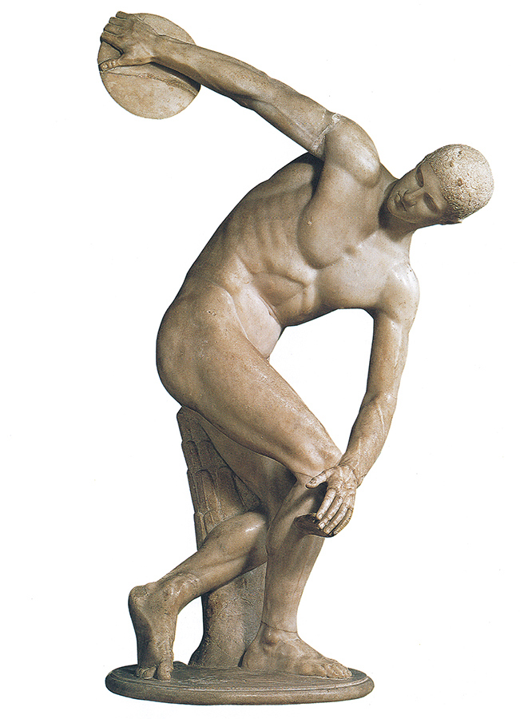
55 Mirón, El discóbolo, h. 450 a.C. Copia romana en mármol del bronce original, 155 cm de altura; Museo Nacional Romano, Roma.
De todos los originales griegos que han llegado hasta nosotros, las esculturas del Partenón acaso sean las que reflejan más maravillosamente esta nueva libertad. El Partenón (ilustración 50) se concluyó unos veinte años después del templo de Olimpia, habiendo adquirido los artistas, en este breve lapso, una extraordinaria holgura y facilidad para resolver los problemas de una representación convincente. No sabemos quiénes fueron los escultores que realizaron esas decoraciones del templo, pero como Fidias hizo la estatua del altar, parece posible que de su taller salieran las esculturas restantes.
Las ilustraciones 56 y 57 reproducen fragmentos de la gran faja o friso anterior que corre alrededor del edificio, bajo el techo, y que representa la procesión anual en la solemne fiesta de la diosa. Se efectuaban siempre juegos y deportes durante esas festividades, uno de los cuales consistía en la peligrosa proeza de saltar adentro y afuera del carro mientras galopaban los cuatro caballos que lo conducían. Tal exhibición es la que se muestra en la ilustración 56. En un principio puede resultar difícil hallar ilación en este primer fragmento, porque el relieve ha sufrido muchos daños. No sólo se trata de una parte de la superficie rota, sino que han desaparecido de ella todos los colores que probablemente hacían que las figuras se destacaran claramente sobre un fondo intensamente coloreado. Para nosotros, la calidad y la contextura del hermoso mármol son algo tan maravilloso que nunca pensaríamos en recubrirlo de color, pero los griegos pintaban incluso sus templos con fuertes y contrastados colores, como el rojo y el azul. Mas por poco que haya quedado de la obra original, tratándose de esculturas griegas siempre vale más tratar de olvidar lo que les falta por el puro placer de descubrir lo que ha quedado. Lo primero que vemos en nuestro fragmento son los caballos, en número de cuatro, uno detrás de otro. Sus cabezas y sus patas están suficientemente bien conservadas como para darnos una idea de la maestría con que el artista consiguió mostrar la estructura de los huesos y los músculos sin que el conjunto pareciese rígido o duro. De pronto advertimos que lo mismo ha debido suceder respecto a las figuras humanas. Por los rastros que han subsistido, podemos imaginar cuán desenvueltamente se movían y con cuánta claridad destacaban los músculos de sus cuerpos. El escorzo ya no ofrecía ningún gran problema al artista. El brazo con el escudo está perfectamente trazado, lo mismo que el flamante penacho del yelmo y las curvas del vestido hinchado por el viento. Pero todos estos descubrimientos no acaban con el artista. Pese a cuanto haya podido disfrutar de esta conquista del espacio y el movimiento, no experimentamos la sensación de que estuviera ansioso en demostrarnos lo que era capaz de conseguir. Pese a lo vivos y animados que hayan llegado a ser los grupos, aún encajan perfectamente en el orden de la procesión solemne que se mueve a lo largo de la pared del edificio. Ha conservado algo de la sabiduría artística de la estructuración que el arte griego recibió de los egipcios y del encaje dentro de un patrón geométrico que precedió al gran despertar. Y es esta seguridad manual la que hace que cada detalle del friso del Partenón sea tan lúcido y «correcto».
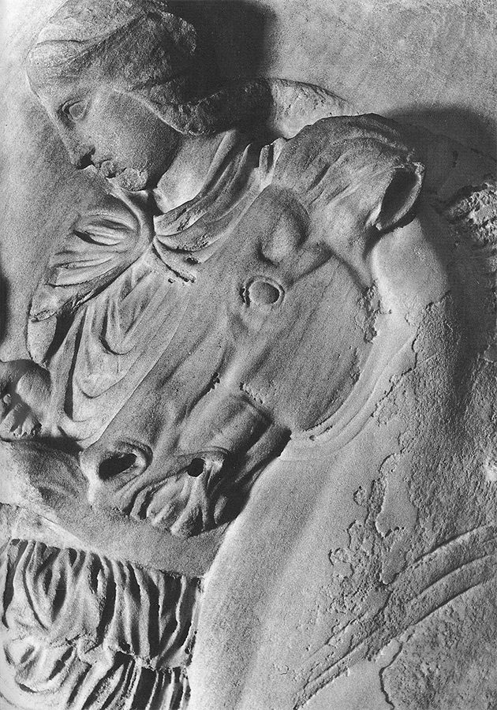
57 Caballo y jinete, h. 440 a.C. Detalle del friso en mármol del Partenón; Museo Británico, Londres.
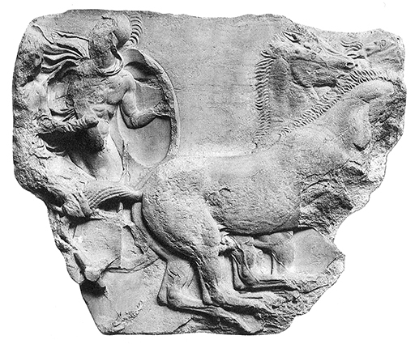
56 Auriga, h. 440 a.C. Detalle del friso en mármol del Partenón; Museo Británico, Londres.
Toda obra griega de aquel gran período muestra esta sabiduría y pericia en el reparto de las figuras, pero lo que los griegos de la época apreciaban más aún era otra cosa: la libertad recién descubierta de plasmar el cuerpo humano en cualquier posición o movimiento podía servir para reflejar la vida interior de las figuras representadas. Sabemos por uno de sus discípulos que eso fue lo que el gran filósofo Sócrates —asimismo formado como escultor— recomendaba a los artistas que hicieran. Debían representar «los movimientos del alma» mediante la observación exacta de cómo «los sentimientos afectan al cuerpo en acción».
Una vez más, los artesanos que pintaban vasijas trataron de absorber los descubrimientos de los grandes maestros, cuyas obras de arte hemos perdido. La ilustración 58 representa el conmovedor episodio de la historia de Ulises cuando el héroe regresa a casa tras diecinueve años de ausencia, disfrazado de mendigo con bastón, hatillo y platillo, y es reconocido por su vieja niñera, que se percata de la cicatriz que tiene en la pierna mientras le lava los pies. El artista estaba ilustrando una versión ligeramente distinta de la de Homero (en la que la niñera lleva un nombre distinto del inscrito en la vasija y en la que Eumeo, el porquerizo, no está presente); quizá viera una obra teatral en la que se representó este fragmento, pues recordemos que fue también durante este siglo cuando los dramaturgos griegos crearon el arte del drama. Pero el caso es que no necesitamos el texto exacto para experimentar que algo dramático y emotivo está pasando, pues la mirada que intercambian la niñera y el héroe es casi más elocuente que las palabras. Desde luego, no hay duda de que los artistas griegos dominaban los medios para transmitir los sentimientos surgidos entre personas.
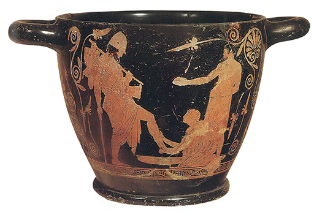
58 Ulises reconocido por su vieja niñera, siglo V a.C. Vaso en el estilo de las «figuras rojas», 20,5 cm de altura; Museo Arqueológico Nacional, Chiusi.
Esta capacidad para hacernos ver «los movimientos del alma» en la pose del cuerpo es lo que convierte a una simple estela sepulcral como la de la ilustración 59 en una gran obra de arte. El relieve muestra a Hegeso, enterrado bajo la lápida, como era en vida. Una doncella que tiene delante le ofrece un estuche, del que parece escoger una joya. Es una escena tranquila que podemos cotejar con la representación egipcia de Tutankamón en su trono con su esposa ajustándole el collar (ilustración 42). La obra egipcia también es maravillosamente clara en cuanto a su silueteado, pero a pesar de pertenecer a un período excepcional del arte egipcio es un tanto rígida y afectada. El relieve griego ha soslayado todas esas embarazosas limitaciones, reteniendo la limpidez y la belleza en la distribución, que ya no es geométrica ni angulosa, sino holgada y flexible. La mitad superior está delimitada por la curva de los brazos de las dos mujeres, formando una línea que se corresponde con las curvas del asiento, modo sencillo de hacer que la belleza de Hegeso se convierta en el centro de atención, con el fluir de los ropajes en torno a las formas del cuerpo, combinándose el todo para producir aquella sencilla armonía que sólo vino al mundo con el arte griego del siglo V a.C.
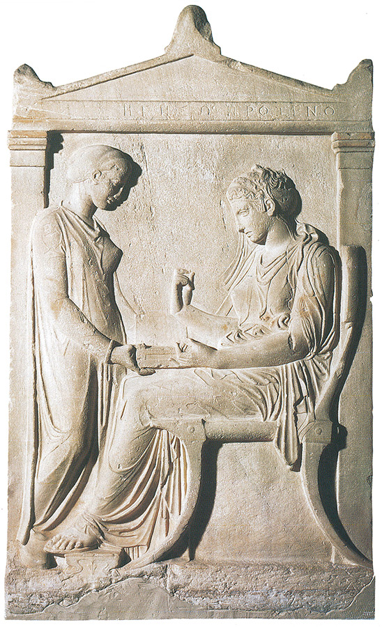
59 Estela funeraria de Hegeso, h. 400 a.C. Mármol, 147 cm de altura; Museo Arqueológico Nacional, Atenas.
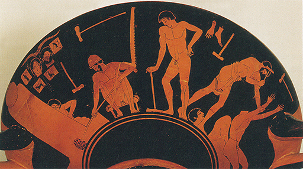
Taller de un escultor griego, h. 480 a.C. Escena del lado inferior de un bol en el estilo de las «figuras rojas»; izquierda: fundición de bronce con bocetos sobre la pared; derecha: hombre trabajando en una estatua sin cabeza, la cabeza está en el suelo; 30,5 cm de diámetro; colección de Arte Antiguo del Museo Nacional, Berlín.